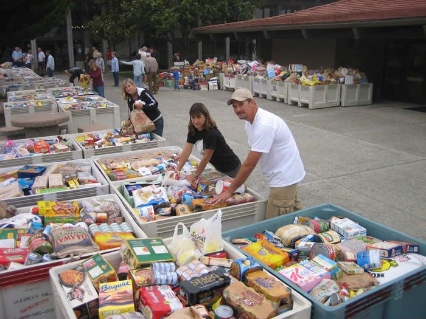
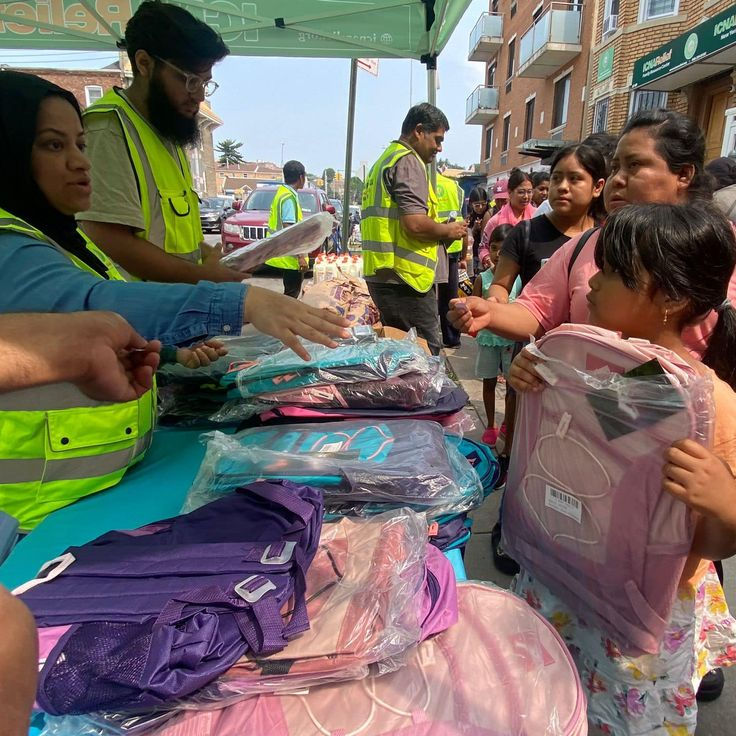
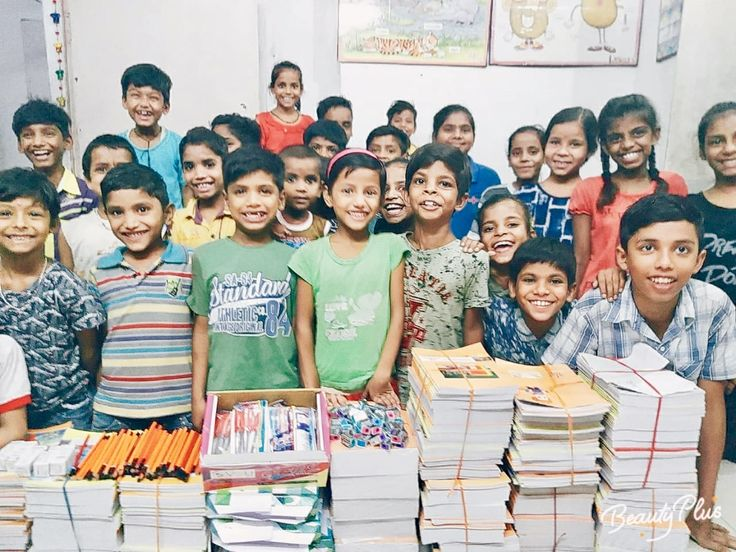
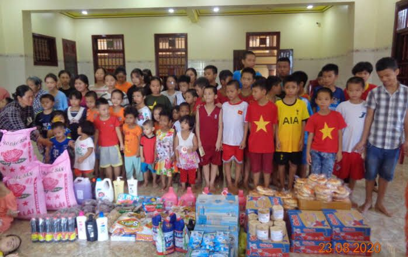

Aktivitas Kami
"Rangkaian aksi nyata untuk bantu sesama yang membutuhkan"
Lihat semua

Penyaluran ke Komunitas Sahabat Ibu – Tangerang
Pada Januari 2025, kami menyalurkan pakaian layak pakai dan perlengkapan rumah tangga ke Komunitas Sahabat Ibu. Bantuan ini diberikan untuk mendukung para ibu yang membutuhkan di wilayah Tangerang.

Pemberian Tas Sekolah – SDN 2 Pahlawan

Donasi Buku Pelajaran – SDN 1 Cipayung

Donasi Seragam Sekolah - SMPN 6 Bekasi
Pada Januari 2025, kami menyalurkan pakaian layak pakai dan perlengkapan rumah tangga ke Komunitas Sahabat Ibu. Bantuan ini diberikan untuk mendukung para ibu yang membutuhkan di wilayah Tangerang.

Donasi Alat Tulis - Panti Asuhan Kalijaga
